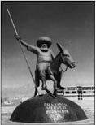
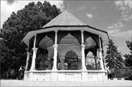

Nasreddin Hoca
Nasreddin Hoca (1208-1284)
Nasreddin Hoca’ya, “Dünyanın merkezi neresidir?” diye sormuşlar. Hoca, eşeğinin sırtında, hiç düşünmeden “Karakaçan’ın ayaklarını bastığı yerdir!” cevabını vermiş. Bu duruma şaşırarak “Olur mu öyle şey Hocam?” demişler. Nasreddin Hoca, umursamaz bir tavırla, “inanmıyorsanız ölçün!” demiş.
Eskişehir’in Sivrihisar ilçesi Hortu yöresinde doğan, Konya’nın Akşehir ilçesinde ölen Türk halk bilgesidir. Babası Hortu köyü imamı Abdullah Efendi’dir. Babasının ölümü üzerine medrese eğitiminin ardından Hortu’ya dönerek köy imamı olur.
Akşehir’de uzun süre kadılık görevinde de bulunduğundan kendisine Nasuriddin Hâce adı verilmiş, zamanla bu ad Nasreddin Hoca biçimini almıştır.
Nasreddin Hoca Anadolu halkının yaşama biçimini, halka anlatmak istediklerini, onların sorunlarını, hayata dair derslerini, çelişkileri; övgü, yergi, alaya alma gibi öğeleri kullanarak eğlenceli bir şekilde hazırcevaplılığıyla dile getirmiştir. Onun ölümünden sonra da halk, Nasreddin Hoca’nın diliyle kendi sesini duyurmuş ve fıkraları her dönemde anlatılmaya devam etmiştir.
Marifet Kavuktaysa, Dünyanın Merkezi, Yağmurdan Kaçmıyorum, Halep Oradaysa Arşın Burada, Cimri, Eşeğin Sözüne mi inanıyorsun?, Ye Kürküm Ye, Kazan Doğurdu, Eski Kilim, ipe Un Sermek, Baklava, Suyunun Suyu, Herkesi Memnun Edemezsin, Peşin Para, Zaten inecektim, Kırk Yıllık Sirke, Yorgan Gitti Kavga Bitti, Ya Tutarsa?, Sen de Haklısın, Parayı Veren Düdüğü Çalar ve daha pek çok fıkrası hâlâ yüzümüze tebessüm, hayatımıza renk ve öğreti katmaktadır.

Şehir mezarlığında bulunan türbesinin yanları açık fakat kapısında kocaman bir kilit var. Nasreddin Hoca, kendisini ziyarete gelenleri bu hoş sürprizle karşılıyor ve mizah dolu kişiliğini oldukça iyi yansıtıyor.
Nasreddin Hoca’dan...Eşeğin Sözüne mi İnanıyorsun?
Komşusu bir gün Nasreddin Hoca’dan eşeğini ödünç ister. Aynı kişi daha önce de eşeğini alıp hor kullandığından Hoca vermek istemez:
“Kusura bakma komşu, eşek burada yok!” der.
Tam komşusu arkasını dönmüş gideceği sırada ahırdan eşeğin sesi gelir. Komşusu Hoca’ya “Hocam, hani eşek burada yoktu?” diye sorar.
Hoca, “Yani ilahi komşu, bu yaşımda ak sakalımla benim sözüme inanmıyorsun da, eşeğin sözüne mi inanıyorsun!” der.
İpe Un Sermek
Nasreddin Hoca’nın aldığını vermeyen bir komşusu vardı. Adamın bu özelliği çevresindekileri bıktırmıştır. Bu adam, bir gün Nasreddin Hoca’nın da kapısını çalar. Hoca’dan eşeğini bağlamak için ip ister. Hoca içeri girer, bir süre bekledikten sonra kapıya gelir:
“Kusura bakma komşum, ipe un sermişler” der. Komşu şaşkınlıkla:
“Amma yaptın Hoca! Hiç ipe un serilir mi?” deyince Hoca daha fazla dayanamaz: “Elbette serilir. İnsanın vermeye gönlü olmayınca ipe de un serilir” der.
Yorgan Gitti Kavga Bitti
Nasreddin Hoca bir gece sokaktan gelen gürültüyle uyanır. Pencereden baktığında iki adam kavga ettiğini görür. Soğuk olduğundan üzerine yorganını da alarak aşağıya iner ve adamlara nasihat etmeye, onları barıştırmaya çalışır. Fakat adamlar Hoca’yı dinlemek yerine iyice kavgaya tutuşurlar.
Ayırmak için araya giren Hoca’nın üzerinden yorganın düşmesi üzerine adamlardan biri yorganı alarak kaçar, diğeri de karanlıkta kaybolur.
Hoca şaşkınlık içinde ıssız sokakta kalakalır. Eve giden Hoca’ya karısı merakla sorar:
“Kavganın nedeni neymiş bey?”
“Hiç, bizim yorgan yüzündenmiş. Yorgan gitti, kavga bitti...”